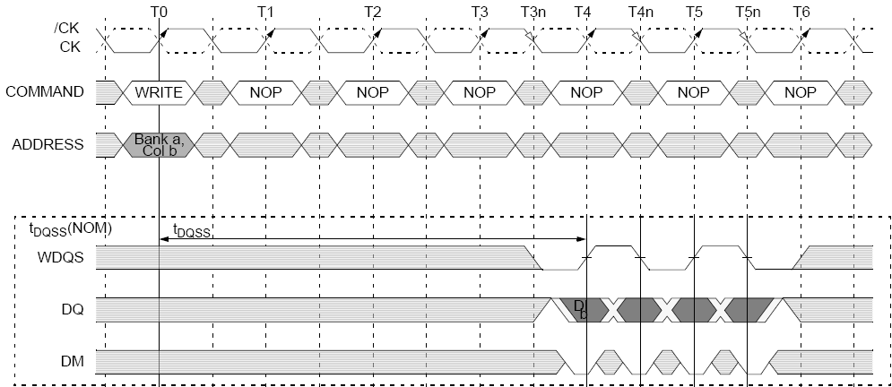

Write bursts
WRITE bursts are initiated with a WRITE command (see following figure). The starting column and bank addresses are provided with the WRITE command, and auto precharge is either enabled or disabled for that access. If auto precharge is enabled, the row being accessed is precharged at the completion of the burst. For the generic WRITE commands used in the following illustrations, auto precharge is disabled.
